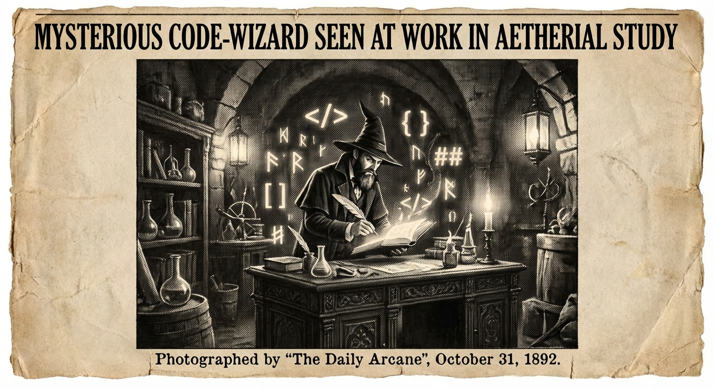

Morning Edition
6:00 AM CSTMarkets & Finance
Stocks Rally Despite Geopolitical Tensions
The S&P 500 rose 0.78% to close at 6,869.50, while the Nasdaq Composite gained 1.29% to 22,807.48. The Dow added 238 points as traders looked past Iran conflict concerns. Consumer discretionary stocks led the charge with a 2% gain—the sector's best day since October.
— Source: CNBC, Trading EconomicsOracle Added to Mizuho Top Picks
Mizuho added Oracle to its March top picks list with a $400 price target, implying 168% upside. Analysts cite AI workflows and Oracle Cloud Infrastructure demand, noting Oracle's positioning as the "fourth hyperscaler" with a focus on enterprise clients and OpenAI partnership revenue.
— Source: CNBCSpace & Tech
Developer Security Horoscope
Sagittarius devs: Today's cosmic alignment favors deep focus and code architecture. The stars suggest your current project is closer to breakthrough than you realize. Trust your technical instincts—but verify with tests. Mercury's influence favors debugging sessions before noon.
— Source: Developer Horoscope Wisdom
The Code Wizard: Where Victorian Mysticism Meets Digital Sorcery.
"Thursday's code is written with intention and clarity. While markets rally and conflicts persist across the world, your focus remains on what you can control: building, learning, creating. Today, embrace deep work. The breakthrough you seek is already forming in the code you haven't written yet."— Developer's Thursday Wisdom
Sagittarius Horoscope
Archer, Thursday brings a surge of creative energy and technical inspiration. The stars align for problem-solving and architectural thinking. You may feel pulled in multiple directions, but your natural optimism helps you see the path forward. Focus on one project at a time—multitasking dilutes your fire sign's power. A conversation midday could spark an important insight. Trust the process.
— Cosmic tip: Deep focus before noon, debugging favored after 2 PM, Mar 5, 2026World & US News
-
Iran Conflict Continues:
Iranian Kurdish militias have consulted with the U.S. about potential operations against Iran's security forces in western Iran, as the military campaign against Tehran continues. Pakistanis fleeing Iran describe widespread explosions and missile strikes.
-
Ukraine F-16 Missile Shortage:
Ukraine's F-16 fighter jets lacked sufficient missiles for more than three weeks as supplies from partners dried up during Moscow's winter air campaign preparation, according to sources.
-
Tech Sector Resilience:
Technology shares continue their historic rally despite geopolitical volatility, with investors balancing AI optimism against Middle East tensions and new global trade policies.
Active Reminders
- Build Oomi iOS and Android app
- Plaid Integration Research
- Connect Nemu to Notion
- Research VPN/proxy services
- Create security OpenClaw bot